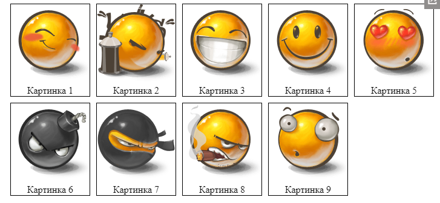
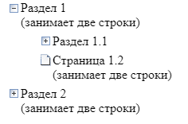
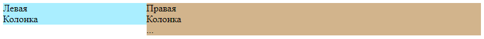

Свойство float
Задачи
Галерея изображений состоит из картинок в рамках с подписями (возможно, с другой дополнительной информацией).
Пример галереи:
Технически вывод такой галереи можно реализовать при помощи списка UL/LI, где:
- каждый LI имеет
display:inline-block - каждый LI имеет
float:left
Какие различия между этими подходами? Какой вариант выбрали бы вы?
Решение:
inline-block остается в потоке, float заставляет элементы "выпадать"
Сделайте дерево при помощи семантической вёрстки и CSS-спрайта с иконками (есть готовый).
Выглядеть должно так (не кликабельно):

- Поддержка многострочных названий узлов
- Над иконкой курсор становится указателем.
Исходный документ содержит список UL/LI и ссылку на картинку.
P.S. Достаточно сделать HTML/CSS-структуру, действия добавим позже.
Решение:
‹ul›
‹li class="open"›
‹div class="icon"›‹/div›
‹div class="text"›Раздел 1
‹br›(занимает две строки)‹/div›
‹ul›
‹li class="closed"›
‹div class="icon"›‹/div›
‹div class="text"›Раздел 1.1‹/div›
‹/li›
‹li class="leaf"›
‹div class="icon"›‹/div›
‹div class="text"›Страница 1.2
‹br›(занимает две строки)‹/div›
‹/li›
‹/ul›
‹/li›
‹li class="closed"›
‹div class="icon"›‹/div›
‹div class="text"›Раздел 2
‹br›(занимает две строки)‹/div›
‹/li›
‹/ul›
Оформите навигацию, центрированную внутри DIV'а:
Требования:
- Левая стрелка – слева, правая – справа, список страниц – по центру.
- Список страниц центрирован вертикально.
- Текст сверху и снизу ни на что не наползает.
- Курсор при наведении на стрелку или элемент списка становится стрелкой
pointer.
P.S. Без использования таблиц.
Решение:
HTML:
‹div class="nav"›
‹img src="arrow-left.jpg" class="left" width="40" height="40"›
‹img src="arrow-right.jpg" class="right" width="40" height="40"›
‹ul class="pages"›
‹li›...‹/li›
‹/ul›
‹/div›
CSS:
.nav {
height: 40px;
width: 80%;
margin: auto;
}
.nav .left {
float: left;
cursor: pointer;
}
.nav .right {
float: right;
cursor: pointer;
}
.nav .pages {
list-style: none;
text-align: center;
margin: 0;
padding: 0;
}
.nav .pages li {
display: inline;
margin: 0 3px;
line-height: 40px;
cursor: pointer;
}
Есть две колонки 30%/70%:
- ‹style›
- .left {
- float:left;
- width:30%;
- background: #aef;
- }
- .right {
- float:right;
- width:70%;
- background: tan;
- }
- ‹/style›
- ‹div class="left"›
- Левая‹br›Колонка
- ‹/div›
- ‹div class="right"›
- Правая‹br›Колонка‹br›...
- ‹/div›

Добавьте к правой колонке рамку border-left и отступ padding-left.
Двухколоночная вёрстка при этом не должна сломаться!
Желательно не трогать свойство width ни слева ни справа и не создавать дополнительных элементов.
Решение:
...
.right {
...
box-sizing: border-box;
border-left: 2px solid green;
padding-left: 10px;
...
}
...